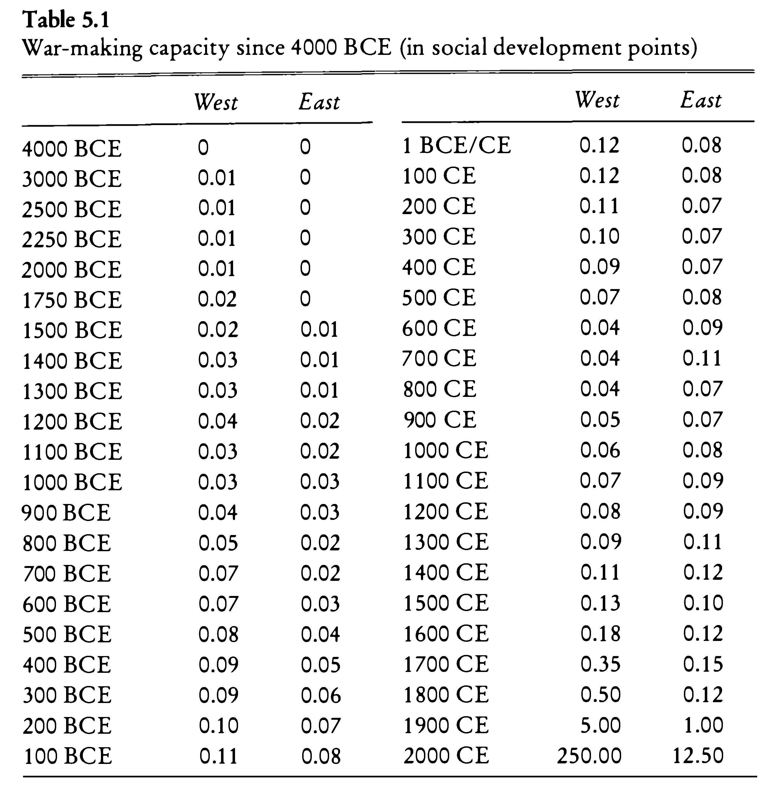

5 L05: Data I
5.1 Collecting, Organizing, Creating
5.2 Goals
Getting to know the basics of working with data: collecting, creating, organizing.
5.3 Software & Other Required Materials
- R
- OCR Engines (https://www.onlineocr.net/); text editor (for example, Sublime Text)
- Excel, Google Spreadsheets, or any other alternative (Easy CSV Editor is a great option for Mac)
5.4 In Class I: Theoretical and Conceptual
5.5 Ways of obtaining data
- Reusing already produced data
- One may require to mold data into a more fitting structure.
- Creating one’s own dataset
- Digitizing data from printed and/or hand-written sources
5.5.1 Using OCR
In class we will use an online OCR engine, but you might want to consider using OCR directly in R. For this purpose, R uses library tesseract, which required Tesseract software to be installed on your computer. You can find detailed instructions here (Warning: this part may be a little bit annoying, but Tesseract is a useful software to have and to know how to use.)
Here is some R code that should get you started on using Tesseract (For more details, check the information page):
Preparations:
library(tesseract)
#LANGUAGEDATA: <https://github.com/tesseract-ocr/langdata>
tesseract_download("eng") # this needs to be done only once
tesseract_download("deu") # this needs to be done only onceConverting an image into a text:
pngPage <- "Sample_Page_With_Tabular_Data_Morris.png"
text <- tesseract::ocr(pngPage, engine = tesseract("eng"))
readr::write_lines(text, str_replace(pngPage, ".png", ".txt"))Converting a PDF into a text:
library(pdftools) # for processing PDFs
pdfPages <- "Morris_2013_Combined.pdf"
pngFile <- pdftools::pdf_convert(pdfPages, dpi = 600)
text <- tesseract::ocr(pngFile, engine = eng)
readr::write_lines(text, str_replace(pdfPages, ".pdf", ".txt"))5.6 Main format
- Relational databases or Tables/Spreadsheets (tabular data)?
- Tabular format: tables; spreadsheets; CSV/TSV files.
- Unique identifiers:
- tables with different data can be connected via unique identifiers
- Note: A relational database (rDB) is a collection of interconnected tables. Tables in an rDB are connected with each other via unique identifiers which are usually automatically created by the database itself when new data is added.
- One can maintain interconnected tables without creating a rDB: Linked Open Data
- Example: Table of the growth of cities. One table includes information on population over time; Another table includes coordinates of the cities from the dataset. It is more efficient and practical (reducing error rate from typos) to work on these tables separately, and connect them via unique identifiers of cities which are used in both tables.
5.6.1 Note on the CSV/TSV format
CSV stands for comma-separated values; TSV — for tab-separated values.
Below is an examples of a CSV format. Here, the first line is the header, which provides the names of columns; each line is a row, while columns are separated with , commas.
city,growth_from_2000_to_2013,latitude,longitude,population,rank,state
New York,4.8%,40.7127837,-74.0059413,8405837,1,New York
Los Angeles,4.8%,34.0522342,-118.2436849,3884307,2,California
Chicago,-6.1%,41.8781136,-87.6297982,2718782,3,Illinois
Houston,11.0%,29.7604267,-95.3698028,2195914,4,Texas
Philadelphia,2.6%,39.9525839,-75.1652215,1553165,5,PennsylvaniaTSV is a better option than a CSV, since TAB characters (\t) are very unlikely to appear in values.
Neither TSV not CSV are good for preserving new line characters (\n)—or, in other words, text split into multiple lines/paragraphs. As a workaround, one can convert \n into some unlikely-to-occur character combination (for example, ;;;), which would be easy to restore into \n later, if necessary.
5.7 Basic principles of organizing data: Tidy Data
5.7.1 Tidy Data
- Each variable is in its own column
- Each observation is in its own row
- Each value is in its own cell
 Source: Wickham, Hadley, and Garrett Grolemund. 2017. R for Data Science: Import, Tidy, Transform, Visualize, and Model Data. Sebastopol, CA: O’Reilly UK Ltd. https://r4ds.had.co.nz/; for a Chapter on tidy data, see: https://r4ds.had.co.nz/tidy-data.html.
Source: Wickham, Hadley, and Garrett Grolemund. 2017. R for Data Science: Import, Tidy, Transform, Visualize, and Model Data. Sebastopol, CA: O’Reilly UK Ltd. https://r4ds.had.co.nz/; for a Chapter on tidy data, see: https://r4ds.had.co.nz/tidy-data.html.
5.7.2 Clean Data
- Column names and row names are easy to use and informative. In general, it is a good practice to avoid
spacesand special characters.- Good example:
western_cities - Alternative good example:
WesternCities - Bad example:
Western Cities (only the largest)
- Good example:
- Obvious mistakes in the data have been removed
- Date format:
YYYY-MM-DDis the most reliable format. Any thoughts why? - There should be no empty
cells:- If you have them, it might be that your data is not organized properly.
- If your data is organized properly,
NAmust be used as an explicit indication that data point is not available.
- Each cell must contain only one piece of data.
- Date format:
- Variable values must be internally consistent
- Be consistent in coding your values:
Mandmanare different values computationally, but may be the same in the dataset; - Keep track of your categories: a document where all codes used in the data set are explained.
- Be consistent in coding your values:
- Preserve original values
- If you are working with a historical dataset, it might be inconsistent.
- For example, distances between cities are given in different formats: days of travel, miles, farsaḫs/parasangs, etc.).
- Instead of replacing original values, it is better to create an additional column, where this information will be homogenized according to some principle.
- Keeping original data will allow to homogenize data in multiple ways.
- Clearly differentiate between the original and modified/modelled values.
- The use of suffixes can be convenient:
Distance_OrigvsDistance_Modified.
- The use of suffixes can be convenient:
- If you are working with a historical dataset, it might be inconsistent.
- Most of editing operations should be performed in software other than R; any spreadsheet program will work, unless it cannot export into CSV/TSV format.
- Keep in mind that if you prepare your data in an Excel-like program, rich formatting (like manual highlights, bolds, and italics) is not data and it will be lost, when you export your data into CSV/TSV format.
- Note: It might be useful, however, to use rule-based highlighting in order, for example, to identify bad values that need to be fixed.
- Back up your data!
- http://github.com is a great place for this, plus it allows to work collaboratively as well as to keep track of all changes.
- Google spreadsheets is a decent alternative for collaborative work, but it lacks version control and detailed tracking of changes.
5.8 In Class II: Practical
5.9 Morris Dataset: the East Vs. the West
|  |
|---|
| War-making capacity since 4000 BCE (in social development points). Data source: Morris, Ian. 2013. The Measure of Civilization: How Social Development Decides the Fate of Nations. Princeton: Princeton University Press. |
5.9.1 Difficulty: Easy
- Digitize “War-making capacity since 4000 BCE” from this file Morris_2013_Combined.pdf.
- Fix the dataset so that it conforms to the principles of tidy data. What should be corrected?
- Load the data set into R
- Graph chronological changes in war-making capacities for the East and the West.
- When the East was in the lead?
- When the West was in the lead?
- How can you determine that? (Hint: review logical operators and vector comparison).
5.9.2 Difficulty: More complicated
- Digitize “Maximum Settlement Sizes” from this file Morris_2013_Combined.pdf.
- Fix the dataset so that it conforms to the principles of tidy data. What should be corrected?
- The datasets for the East and the West are separate. What would be your strategies to combine them?
- Graph chronological changes in war-making capacities for the East and the West.
- When the East was in the lead? What were the most prominent settlements?
- When the West was in the lead? What were the most prominent settlements?
- How can you determine that? (Hint: review logical operators and vector comparison).
5.10 Viennese Districts
There is quite a lot of data on Vienna at the Wien Geschichte Wiki Website. Your task will be to collect data on 23 viennese districts: 1) numbers of houses; 2) numbers of inhabitants. This information is available on pages of each district. You can find them at the following links: 1, 2, 3, 4, 5, 6, 7, 8, 9, 10, 11, 12, 13, 14, 15, 16, 17, 18, 19, 20, 21, 22, 23. To get to the data that we need, you will need to click on the link with the actual name of the district. There you will find a detailled description of the district and one of the sections will contain statistics on houses and the inhabitants of the district. Your task will be as follows:
- to collect this data into tables (CSV files) that will be organizes according to the principles of tidy data;
- there are 23 districts and 13 students; each one of you will need to collect data on two districts (treat this not as a torture, but as an exercise);
- please, pick your districts here (write in your name against two districts that you want to pprepare);
- as always, you are welcome to work collaboratively (there still must be two districts per person though);
- you are encouraged to use the strategies that we discussed in class and come up with your own (for example, you can carefully retype the data from graphs; but you can also look for the source of this data; both strategies are perfectly fine).
- in your homework notebook:
- load the data that you have collected;
- print out the tables (they are rather small, so print them in full);
- generate graphs of growth of houses and inhabitants;
- email CSV files together with your notebooks.
5.11 Reference Materials
- Wickham, Hadley. 2014. “Tidy Data.” Journal of Statistical Software 59 (10). https://doi.org/10.18637/jss.v059.i10. (The article in open access)
- Check these slides: A. Ginolhac, E. Koncina, R. Krause. Principles of Tidy Data: tidyr https://lsru.github.io/tv_course/lecture05_tidyr.html (Also check their other lectures/slides: )
- Broman, Karl W., and Kara H. Woo. 2018. “Data Organization in Spreadsheets.” The American Statistician 72 (1): 2–10. https://doi.org/10.1080/00031305.2017.1375989.
5.12 Additional
- Morris, Ian. 2013. The Measure of Civilization: How Social Development Decides the Fate of Nations. Princeton: Princeton University Press.
- Note: This book is a methodological companion to: Morris, Ian. 2010. Why the West Rules—for Now: The Patterns of History, and What They Reveal about the Future. New York: Farrar, Straus and Giroux.
5.13 Additional Readings
- Wickham, Hadley. 2014. “Tidy Data.” Journal of Statistical Software 59 (10). https://doi.org/10.18637/jss.v059.i10. (The article in open access)
5.14 Homework
- Finish the assignment started in class; email report (ideally, as a PDF, since now it will include graphs).
- Find your own small data set published in a book or an article; digitize it using strategies discussed in class; run some analytical tasks (anything from what you have learned so far); create a report.
- Email both reports.
5.15 Submitting homework
- Homework assignment must be submitted by the beginning of the next class;
- Email your homework to the instructor as attachments.
- In the subject of your email, please, add the following:
070184-LXX-HW-YourLastName-YourMatriculationNumber, whereLXXis the numnber of the lesson for which you submit homework;YourLastNameis your last name; andYourMatriculationNumberis your matriculation number.
- In the subject of your email, please, add the following: